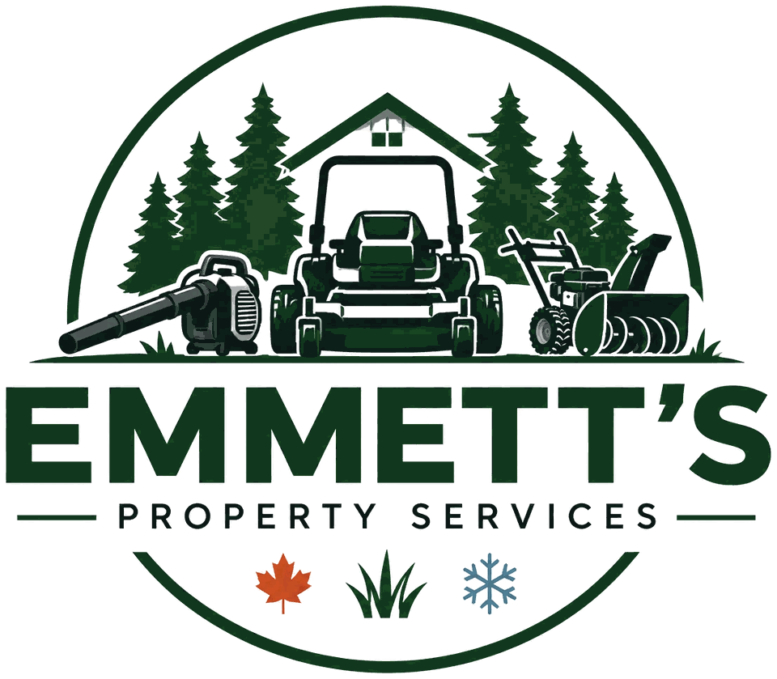

Residential · Commercial · HOA
Fall lawn
cleanup
Leaves, edging and gutters, handled in one visit.
Ready for winter. Greener in spring.
Included
- Leaf removal
- Edging
- Gutter cleaning
- Bed cleanout
Scan for a free quote

Residential · Commercial · HOA
Leaves, edging and gutters, handled in one visit.
Ready for winter. Greener in spring.
Included
Scan for a free quote